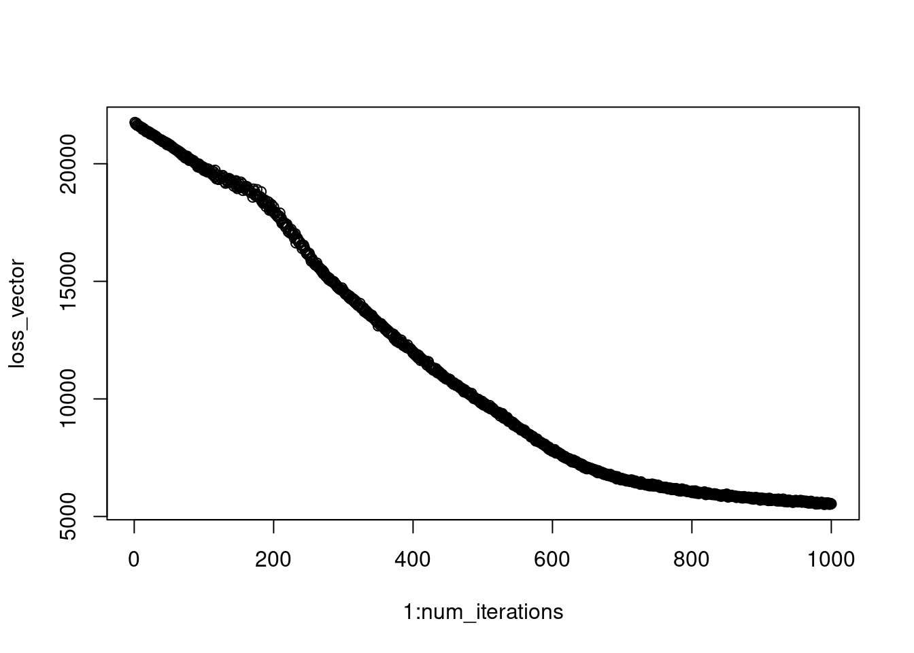
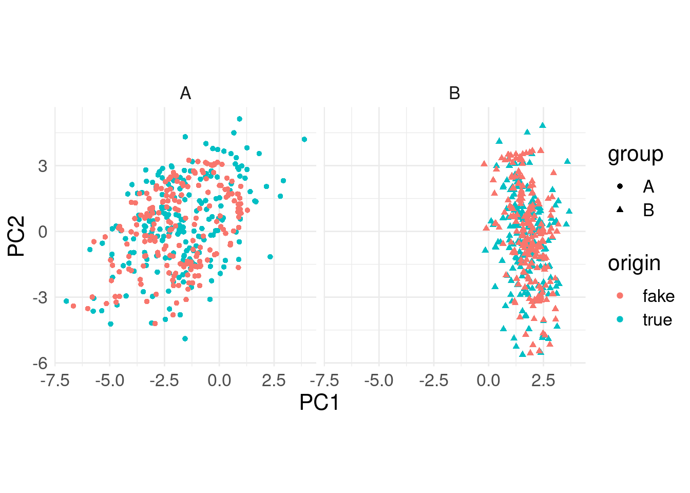
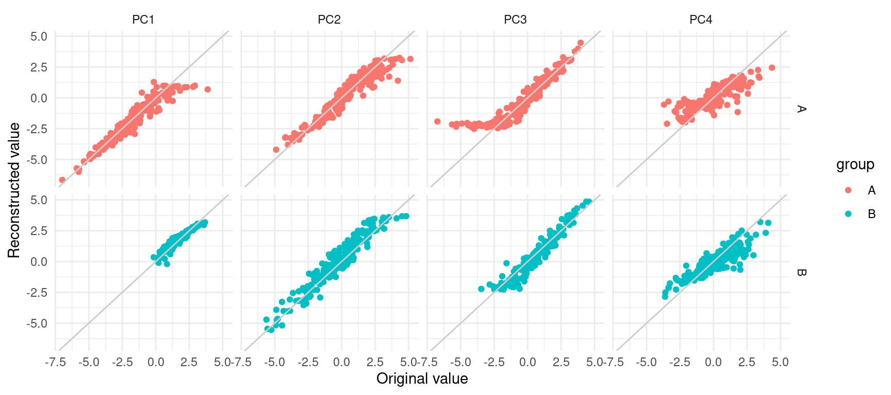
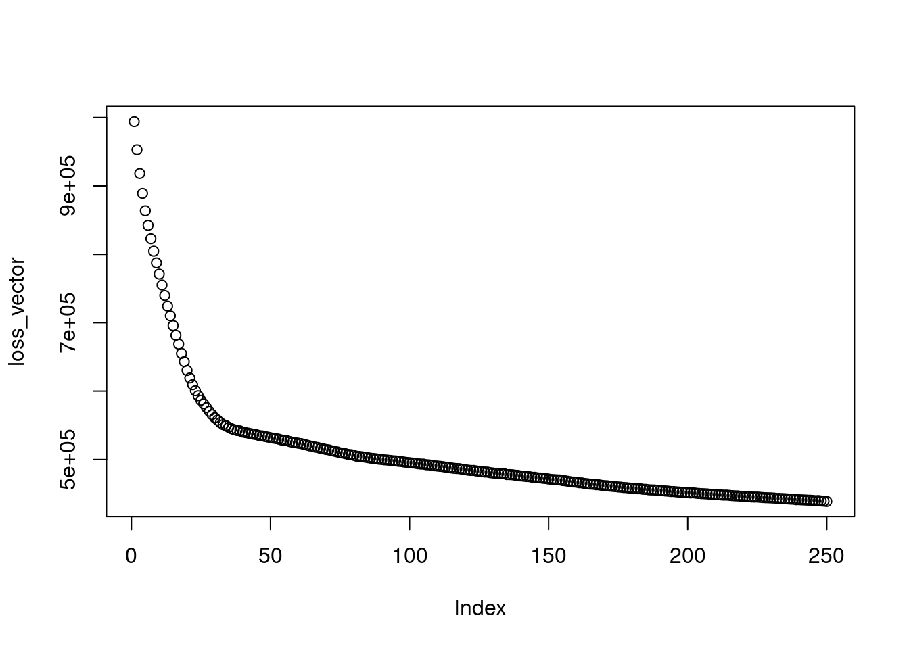
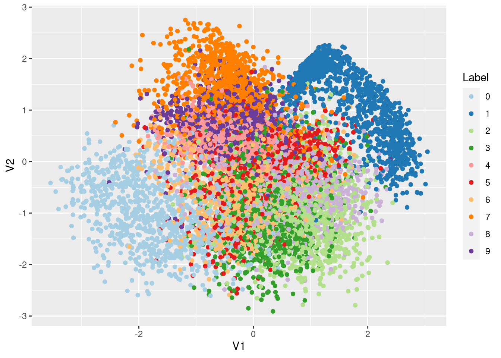

VAE
finister2022
2022-09-30
library(tidyverse)
library(torch)Ce document illustre un essai d’auto-encodeur variationnel utilisant
la librairie torch.
Example simple (données mutivariées, sans structures)
Simulation de données
On commence par simuler des données suivant des gaussiennes pseudo-dégénérées, via une matrice \(R\) de taille \(15 \times 2\)
\[ \begin{align*} Z & \sim \mathcal{N}_2(0, I_2) \\ Y = \mu + RZ + E & \sim \mathcal{N}_{15}(0, RR^T + \sigma^2 I_{15}) \end{align*} \]
Pour créer une structure de groupe naturelle, on simule 2 groupes de données, chacun avec son propre \(\mu\) et son propre \(R\)
set.seed(42)
n <- 200
k <- 2
p <- 15
sigma <- 0.1
A <- matrix(rnorm(p*k), nrow = p, ncol = k)
B <- matrix(rnorm(p*k), nrow = p, ncol = k)
Y_A <- matrix(rnorm(n*k), nrow = n, ncol = k) %*% t(A) + sigma * matrix(rnorm(n*p), nrow = n, ncol = p)
mean_A <- rep(1, n) %o% rnorm(p)
Y_B <- matrix(rnorm(n*k), nrow = n, ncol = k) %*% t(B) + sigma * matrix(rnorm(n*p), nrow = n, ncol = p)
mean_B <- rep(1,n) %o% rnorm(p)
input <- torch_tensor(rbind(Y_A + mean_A, Y_B + mean_B))On va construire un auto-encoder avec un espace latent de dimension
latent_dim égale à 2 pour pouvoir faire des dessins.
latent_dim <- 2Définition d’un encodeur
On définit ensuite un encodeur comme un réseau très simple avec deux couches linéaires de tailles 10 puis 5 et des fonctions d’activation relu (hormis pour la couche finale de répresentation).
La construction passe par la définition d’un module (via
nn_module()) auquel il faut (au moins) fournir 2
méthodes:
initialize()qui indique comment initialiser une nouvelle instance du réseau (et définit l’architecture du réseau)forward()qui indique comment réaliser les calculs
encoder <- nn_module(
classname = "encoder",
## Définition des couches
initialize = function(in_features, latent_dim) {
self$linear1 <- nn_linear(in_features, 10)
self$linear2 <- nn_linear(10, 5)
self$mean <- nn_linear(5, latent_dim)
self$log_var <- nn_linear(5, latent_dim)
},
## Définitions des calculs
forward = function(input) {
## Combinaison linéaire des features dans la première couche
input <- self$linear1(input)
## Activation relu
input <- nnf_relu(input)
## Combinaison linéaire des features dans la deuxième couche
input <- self$linear2(input)
## Activation relu
input <- nnf_relu(input)
## Création des paramètres de moyenne et de variance
mean <- self$mean(input)
log_var <- self$log_var(input)
## L'encodeur renvoie mean et sd
list(mean = mean,
log_var = log_var)
}
)On peut aussi définir ce module de façon plus compacte en utilisant
nn_sequential() pour chaîner des module et indiquer dans la
définition les fonctions d’activation à utiliser.
## Création d'un module compressor
create_compressor <- function(in_features) {
nn_sequential(
nn_linear(in_features, 10),
nn_relu(),
nn_linear(10, 5),
nn_relu()
)
}
## Création de l'encodeur à l'aide du compresseur
encoder <- nn_module(
classname = "encoder",
## Définition des couches
initialize = function(in_features, latent_dim) {
self$compressor <- create_compressor(in_features)
self$mean <- nn_linear(5, latent_dim)
self$log_var <- nn_linear(5, latent_dim)
},
## Définitions des calculs
forward = function(input) {
## Calcul des répresentations compressées
compressed <- self$compressor(input)
## Création des paramètres de moyenne et de variance
mean <- self$mean(compressed)
log_var <- self$log_var(compressed)
## L'encodeur renvoie mean et log_var
list(mean = mean,
log_var = log_var)
}
)L’encodeur produit deux vecteurs de taille latent_dim à
partir d’un vecteur de données (de taille 15).
On peut le vérifier sur un exemple simple
enc <- encoder(15, 2)
enc(input[1:5, ])## $mean
## torch_tensor
## 0.01 *
## -0.9715 -26.9939
## -3.3558 -24.2478
## -7.5067 -18.2811
## 3.1976 -25.5271
## -0.0748 -26.9301
## [ CPUFloatType{5,2} ][ grad_fn = <AddmmBackward0> ]
##
## $log_var
## torch_tensor
## 0.3697 0.3882
## 0.3674 0.3817
## 0.3509 0.4102
## 0.3070 0.6107
## 0.3589 0.4276
## [ CPUFloatType{5,2} ][ grad_fn = <AddmmBackward0> ]Définition d’un décodeur
On crée ensuite notre décodeur de la même façon. Ce dernier va partir
d’un vecteur de taille latent_dim pour construire un
vecteur de taille 15. Par souci de simplicité, on adopte une
architecture symétrique à celle du décodeur à l’exception de la dernière
couche (purement linéaire).
## Création d'un module decompressor
create_decompressor <- function(latent_dim, out_features) {
nn_sequential(
nn_linear(latent_dim, 5),
nn_relu(),
nn_linear(5, 10),
nn_relu(),
nn_linear(10, out_features),
)
}
## Création du decodeur à l'aide du decompresseur
decoder <- nn_module(
classname = "decoder",
## Définition des couches
initialize = function(latent_dim, out_features) {
self$decompressor <- create_decompressor(latent_dim, out_features)
},
## Définitions des calculs
forward = function(input) {
self$decompressor(input)
}
)Le décodeur produit un vecteur de taille out_features à
partir d’un vecteur de taille latent_dim. On peut le
vérifier sur un exemple simple.
dec <- decoder(2, 15)
latent_vectors <- matrix(0, nrow = 5, ncol = 2) |> torch_tensor()
dec(latent_vectors)## torch_tensor
## Columns 1 to 10 0.4219 -0.3598 0.0388 -0.2841 0.2780 -0.0876 0.0519 0.2097 0.1900 0.1701
## 0.4219 -0.3598 0.0388 -0.2841 0.2780 -0.0876 0.0519 0.2097 0.1900 0.1701
## 0.4219 -0.3598 0.0388 -0.2841 0.2780 -0.0876 0.0519 0.2097 0.1900 0.1701
## 0.4219 -0.3598 0.0388 -0.2841 0.2780 -0.0876 0.0519 0.2097 0.1900 0.1701
## 0.4219 -0.3598 0.0388 -0.2841 0.2780 -0.0876 0.0519 0.2097 0.1900 0.1701
##
## Columns 11 to 15 0.2885 -0.0224 -0.0065 0.1340 -0.1165
## 0.2885 -0.0224 -0.0065 0.1340 -0.1165
## 0.2885 -0.0224 -0.0065 0.1340 -0.1165
## 0.2885 -0.0224 -0.0065 0.1340 -0.1165
## 0.2885 -0.0224 -0.0065 0.1340 -0.1165
## [ CPUFloatType{5,15} ][ grad_fn = <AddmmBackward0> ]Définition du VAE
La dernière étape consiste à coupler l’encodeur et le décodeur via un échantillonneur:
vae_module <- nn_module(
classname = "sampler",
initialize = function(n_features, latent_dim) {
self$latent_dim <- latent_dim
self$encoder <- encoder(n_features, latent_dim)
self$decoder <- decoder(latent_dim, n_features)
},
forward = function(input) {
## compression des données
comp_input <- self$encoder(input)
mean <- comp_input$mean
log_var <- comp_input$log_var
## échantillonnage dans l'espace latent
z <- mean + torch_exp(log_var$mul(0.5))*torch_randn(c(dim(input)[1], self$latent_dim))
## décompression de la représentation latente
decomp_input <- self$decoder(z)
list(decomp_input = decomp_input,
z = z,
mean = mean,
log_var = log_var)
}
)Pour chaque vecteur de taille n_features, notre vae
produit:
- 3 vecteurs de taille
latent_dim(dont un aléatoire) - 1 vecteurs de taille
n_features
vae <- vae_module(n_features = 15, latent_dim = 2)
vae(input[1, , drop = FALSE])## $decomp_input
## torch_tensor
## Columns 1 to 10 0.0755 0.0058 -0.0355 0.0319 -0.0362 0.0772 0.0997 0.1617 -0.0364 0.1309
##
## Columns 11 to 15 0.1947 0.1065 0.3727 -0.0406 0.4348
## [ CPUFloatType{1,15} ][ grad_fn = <AddmmBackward0> ]
##
## $z
## torch_tensor
## 0.6876 0.1226
## [ CPUFloatType{1,2} ][ grad_fn = <AddBackward0> ]
##
## $mean
## torch_tensor
## 0.0188 0.3651
## [ CPUFloatType{1,2} ][ grad_fn = <AddmmBackward0> ]
##
## $log_var
## torch_tensor
## 0.3922 -0.0837
## [ CPUFloatType{1,2} ][ grad_fn = <AddmmBackward0> ]On peut vérifier que le composant z est aléatoire en
appelant vae() deux fois.
## Premier appel
vae(input[1, , drop = FALSE])$z## torch_tensor
## 0.01 *
## -6.9877 -19.6687
## [ CPUFloatType{1,2} ][ grad_fn = <AddBackward0> ]## Deuxième appel
vae(input[1, , drop = FALSE])$z## torch_tensor
## 1.5427 -1.3149
## [ CPUFloatType{1,2} ][ grad_fn = <AddBackward0> ]Création du VAE et de l’optimiseur
On (ré-)initialise notre VAE
vae <- vae_module(n_features = 15, latent_dim = 2)Et on prépare un optimiseur
optimizer_vae <- optim_adam(vae$parameters, lr = 0.001)Entraînement du VAE
Dans cette partie, on se contente de charger l’ensemble des données,
on ne travaille par batch (ce qui nécessiterait de définir un
dataloader()).
On commence par définir une fonction de perte comme la somme de l’entropie croisée et de la divergence de Kullback-Leibler
loss_fn <- function(prediction, target, mean, log_var) {
## Perte L2 pour la reconstruction
cross_entropy <- nn_mse_loss(reduction = "sum")
## KL part of the loss
kl <- function(mean, log_var) {
kl_div <- 1 + log_var - mean$square() - log_var$exp()
kl_div$multiply(-0.5)$sum()
}
## Addition des deux
cross_entropy(prediction, target) + kl(mean, log_var)
}
eval_loss <- function(input) {
target <- input
## Extraction des composant prediction, mean, log_var depuis le VAE
results <- vae(input)
mean <- results$mean
log_var <- results$log_var
prediction <- results$decomp_input
loss_fn(prediction, target, mean, log_var)
}On vérifie sur un exemple simple que la fonction de perte est bien définie et vaut ce qu’on pense sur des exemples simples.
loss_fn(prediction = input[1, , drop = FALSE],
target = input[1, , drop = FALSE],
mean = torch_zeros(2),
log_var = torch_zeros(2))## torch_tensor
## 0
## [ CPUFloatType{} ]Puis on entraîne notre modèle (comme vu dans l’atelier sur
torch) pendant 1000 itérations.
num_iterations <- 1000
loss_vector <- vector("numeric", num_iterations)
for (i in 1:num_iterations) {
optimizer_vae$zero_grad()
loss <- eval_loss(input)
loss$backward()
loss_vector[i] <- loss |> as.numeric()
optimizer_vae$step()
}On peut regarder l’évolution de la perte au fil du temps.
plot(1:num_iterations, loss_vector)
Exploration des résultats
On peut visualiser la représentation des données dans notre espace latent. On peut se contenter de faire tourner l’encodeur pour ça.
latents <- vae$encoder(input)$meanEt les afficher
latents |> as.matrix() |> `colnames<-`(c("x", "y")) |> as_tibble() |>
mutate(group = rep(c("A", "B"), each = n)) |>
ggplot() + aes(x, y, color = group) +
geom_point() +
coord_equal() +
theme_minimal() +
theme(text = element_text(size = 16))On peut aussi vérifier comment se positionne les reconstructions par rapport aux données originales (après avoir fait une ACP sur le tableau complet).
reconstructions <- vae(input)$decomp_input |>
as.matrix() %>% `colnames<-`(paste0("D", 1:ncol(.)))
pca <- prcomp(rbind(input |> as.matrix(), reconstructions), scale. = TRUE, center = TRUE)
point_data <- pca$x %>%
as_tibble() %>%
mutate(origin = rep(c("true", "fake"), each = nrow(input)),
group = rep(c("A", "B", "A", "B"), each = n))
line_data <- point_data |> mutate(ID = rep(1:nrow(input), 2)) |>
pivot_wider(id_cols = c(ID, group), names_from = origin, values_from = starts_with("PC"))ggplot() +
geom_point(data = point_data, mapping = aes(x = PC1, y = PC2, color = origin, shape = group)) +
# geom_segment(data = line_data, mapping = aes(x = PC1_true, xend = PC1_fake, y = PC2_true, yend = PC2_fake), color = "grey80") +
coord_equal() +
theme_minimal() +
facet_wrap(~ group) +
theme(text = element_text(size = 16))
plot_data <- point_data |> mutate(ID = rep(1:nrow(input), 2)) |>
pivot_longer(cols = starts_with("PC"), names_to = "PC", values_to = "value") |>
pivot_wider(id_cols = c(ID, group, PC), names_from = "origin", values_from = "value") |>
filter(PC %in% paste0("PC", 1:4))ggplot(plot_data, aes(x = true, y = fake, color = group)) +
geom_point() +
geom_abline(slope = 1, intercept = 0, color = "grey80") +
labs(x = "Original value", y = "Reconstructed value") +
facet_grid(group ~ PC) +
theme_minimal()
Exemple MNIST
On applique maintenant cette même approche VAE à un jeu de données réel — et très original : MNIST, qui regroupe 70,000 exemples de caractères numériques manuscrits (ie des exemples de digits de 0 à 9). Chaque observation est une image, i.e. une matrice de taille \(28\times 28\) où chaque entrée correspond à un niveau de gris quantifié de 0 à 255. On va ici analyser ces données - sans prendre en compte l’aspect “image”: chaque image converti en un vecteur de taille \(784\), - sans prendre en compte l’information du label (du digit).
On charge les données à partir du package torchvision et
on les reformate
## Chargement des donnees mnist
## Les donnnes vont etre chargees depuis le web
## et stockees dans le repertoire "dir".
library(torchvision)
dir = './'
x_train <- torchvision::mnist_dataset(
dir,
download = TRUE,
)## Processing...
## Done!## On passe l'echelle de gris en [0,1]
xtrain = x_train$data/255On peut afficher chaque image:
plot_image <- function(input) {
par(mar = c(0, 0, 0, 0))
image(input[28:1,] |> t(),
col = gray.colors(256, start = 0, end = 1, rev = FALSE),
axes = FALSE)
}
plot_image(xtrain[3,,])Et on continue le traitement des données:
## On passe les images en vecteur
input_dim = dim(xtrain)[2]*dim(xtrain)[3]
xtrain <- torch_reshape(xtrain, c(nrow(xtrain), input_dim))
dim(xtrain)## [1] 60000 784## On recupere les labels
ytrain <- x_train$targetsOn choisit la taille de l’espace latent (ici deux pour faciliter les représentations graphiques des données)
latent_dim = 2Création de l’encodeur
Il sera constitué de 2 couches denses avec fonction d’activation RELU:
## Création d'un module compressor, qui genere un objet nn_module
create_compressor <- function(input_dim) {
nn_sequential(
nn_linear(input_dim, 100),
nn_relu(),
nn_linear(100, 20),
nn_relu(),
)
}
## Verification
create_compressor(input_dim)## An `nn_module` containing 80,520 parameters.
##
## ── Modules ─────────────────────────────────────────────────────────────────────
## • 0: <nn_linear> #78,500 parameters
## • 1: <nn_relu> #0 parameters
## • 2: <nn_linear> #2,020 parameters
## • 3: <nn_relu> #0 parametersLe résultat issu du compresseur est ensuite utilisé pour générer la moyenne et la variance de la variable latente :
## Création de l'encodeur à l'aide du compresseur
encoder <- nn_module(
classname = "encoder",
## Définition des couches
initialize = function(input_dim, latent_dim) {
self$compressor <- create_compressor(input_dim)
self$mean <- nn_linear(20, latent_dim)
self$log_var <- nn_linear(20, latent_dim)
},
## Définitions des calculs
forward = function(input) {
## Calcul des répresentations compressées
compressed <- self$compressor(input)
## Création des paramètres de moyenne et de variance
mean <- self$mean(compressed)
log_var <- self$log_var(compressed)
## L'encodeur renvoie mean et log_var
list(mean = mean, log_var = log_var)
}
)
## Vérification
enc <- encoder(input_dim, latent_dim)
enc(xtrain[1:2, ])## $mean
## torch_tensor
## 0.1066 0.0810
## 0.0952 0.0911
## [ CPUFloatType{2,2} ][ grad_fn = <AddmmBackward0> ]
##
## $log_var
## torch_tensor
## -0.1286 0.0440
## -0.1282 0.0595
## [ CPUFloatType{2,2} ][ grad_fn = <AddmmBackward0> ]Création du décodeur
Le décompresseur est ici le symétrique du compresseur : deux couches denses avec fonction d’activation RELU :
## Création d'un module decompressor
create_decompressor <- function(latent_dim, input_dim) {
nn_sequential(
nn_linear(latent_dim, 20),
nn_relu(),
nn_linear(20, 100),
nn_relu(),
nn_linear(100, input_dim),
)
}
## Verif
create_decompressor(latent_dim,input_dim)## An `nn_module` containing 81,344 parameters.
##
## ── Modules ─────────────────────────────────────────────────────────────────────
## • 0: <nn_linear> #60 parameters
## • 1: <nn_relu> #0 parameters
## • 2: <nn_linear> #2,100 parameters
## • 3: <nn_relu> #0 parameters
## • 4: <nn_linear> #79,184 parameters## Création du decodeur à l'aide du decompresseur
decoder <- nn_module(
classname = "decoder",
## Définition des couches
initialize = function(latent_dim, input_dim) {
self$decompressor <- create_decompressor(latent_dim, input_dim)
},
## Définitions des calculs
forward = function(input) {
self$decompressor(input)
}
)
## Verif
dec <- decoder(latent_dim, input_dim)
latent_vectors <- matrix(0, nrow = 5, ncol = latent_dim) %>% torch_tensor()
dec(latent_vectors)## torch_tensor
## Columns 1 to 10-0.2724 -0.0653 -0.0963 0.0735 0.0373 -0.0975 -0.0285 -0.2359 -0.0188 0.0457
## -0.2724 -0.0653 -0.0963 0.0735 0.0373 -0.0975 -0.0285 -0.2359 -0.0188 0.0457
## -0.2724 -0.0653 -0.0963 0.0735 0.0373 -0.0975 -0.0285 -0.2359 -0.0188 0.0457
## -0.2724 -0.0653 -0.0963 0.0735 0.0373 -0.0975 -0.0285 -0.2359 -0.0188 0.0457
## -0.2724 -0.0653 -0.0963 0.0735 0.0373 -0.0975 -0.0285 -0.2359 -0.0188 0.0457
##
## Columns 11 to 20 0.0428 0.1092 -0.1675 0.0479 0.1081 -0.0830 -0.0789 -0.0807 0.0555 -0.1057
## 0.0428 0.1092 -0.1675 0.0479 0.1081 -0.0830 -0.0789 -0.0807 0.0555 -0.1057
## 0.0428 0.1092 -0.1675 0.0479 0.1081 -0.0830 -0.0789 -0.0807 0.0555 -0.1057
## 0.0428 0.1092 -0.1675 0.0479 0.1081 -0.0830 -0.0789 -0.0807 0.0555 -0.1057
## 0.0428 0.1092 -0.1675 0.0479 0.1081 -0.0830 -0.0789 -0.0807 0.0555 -0.1057
##
## Columns 21 to 30 0.0165 0.0540 -0.2627 0.0493 0.0787 0.0530 -0.0299 -0.1206 -0.1560 -0.0663
## 0.0165 0.0540 -0.2627 0.0493 0.0787 0.0530 -0.0299 -0.1206 -0.1560 -0.0663
## 0.0165 0.0540 -0.2627 0.0493 0.0787 0.0530 -0.0299 -0.1206 -0.1560 -0.0663
## 0.0165 0.0540 -0.2627 0.0493 0.0787 0.0530 -0.0299 -0.1206 -0.1560 -0.0663
## 0.0165 0.0540 -0.2627 0.0493 0.0787 0.0530 -0.0299 -0.1206 -0.1560 -0.0663
##
## Columns 31 to 40-0.1335 0.0649 -0.1463 0.0221 -0.0153 0.0030 0.0947 -0.0683 -0.0027 0.2108
## -0.1335 0.0649 -0.1463 0.0221 -0.0153 0.0030 0.0947 -0.0683 -0.0027 0.2108
## -0.1335 0.0649 -0.1463 0.0221 -0.0153 0.0030 0.0947 -0.0683 -0.0027 0.2108
## -0.1335 0.0649 -0.1463 0.0221 -0.0153 0.0030 0.0947 -0.0683 -0.0027 0.2108
## -0.1335 0.0649 -0.1463 0.0221 -0.0153 0.0030 0.0947 -0.0683 -0.0027 0.2108
##
## Columns 41 to 50-0.1737 -0.1380 -0.1962 0.0129 -0.0061 0.2063 -0.0546 -0.1406 -0.0070 -0.0462
## -0.1737 -0.1380 -0.1962 0.0129 -0.0061 0.2063 -0.0546 -0.1406 -0.0070 -0.0462
## -0.1737 -0.1380 -0.1962 0.0129 -0.0061 0.2063 -0.0546 -0.1406 -0.0070 -0.0462
## -0.1737 -0.1380 -0.1962 0.0129 -0.0061 0.2063 -0.0546 -0.1406 -0.0070 -0.0462
## -0.1737 -0.1380 -0.1962 0.0129 -0.0061 0.2063 -0.0546 -0.1406 -0.0070 -0.0462
##
## ... [the output was truncated (use n=-1 to disable)]
## [ CPUFloatType{5,784} ][ grad_fn = <AddmmBackward0> ]Création de l’échantillonneur
vae_sampler <- nn_module(
classname = "sampler",
initialize = function(input_dim, latent_dim) {
self$latent_dim <- latent_dim
self$encoder <- encoder(input_dim, latent_dim)
self$decoder <- decoder(latent_dim, input_dim)
},
forward = function(input) {
## compression des données
comp_input <- self$encoder(input)
mean <- comp_input$mean
log_var <- comp_input$log_var
## échantillonnage dans l'espace latent
z <- mean + torch_exp(log_var$mul(0.5))*torch_randn(nrow(input), self$latent_dim)
## décompression de la représentation latente
decomp_input <- self$decoder(z)
list(decomp_input = decomp_input,
z = z,
mean = mean,
log_var = log_var)
}
)
## Verification
vae <- vae_sampler(input_dim, latent_dim)
vae(xtrain[1, , drop = FALSE])## $decomp_input
## torch_tensor
## Columns 1 to 10-0.1011 0.1776 0.0364 -0.0644 0.1030 -0.1356 0.0541 -0.3265 0.1492 0.1568
##
## Columns 11 to 20 0.0445 0.0574 -0.1786 0.1504 -0.0574 0.0260 -0.1151 0.0584 0.0384 -0.0879
##
## Columns 21 to 30 0.1016 0.0486 -0.2228 0.1764 0.0275 0.0338 0.0722 -0.0511 -0.1783 -0.0548
##
## Columns 31 to 40-0.1185 0.0134 0.1922 -0.0012 -0.0226 0.1658 -0.1152 0.0045 0.1409 -0.0322
##
## Columns 41 to 50 0.1698 -0.0283 0.1429 0.0195 -0.1468 -0.0091 -0.0759 -0.0604 -0.0275 0.1832
##
## Columns 51 to 60 0.0944 0.0047 -0.1218 -0.0034 0.1103 -0.0533 0.1876 -0.2450 0.0233 0.0208
##
## Columns 61 to 70 0.1612 -0.0705 -0.0914 0.1699 -0.0607 -0.0151 -0.0429 0.0232 0.1031 -0.0408
##
## Columns 71 to 80 0.0244 0.1063 -0.0690 0.1366 -0.0931 0.2564 -0.0813 -0.0365 0.0884 0.2236
##
## Columns 81 to 90-0.0426 0.1036 -0.0962 0.0040 0.2234 -0.0479 0.1215 0.1048 -0.1115 -0.0088
##
## Columns 91 to 100 0.2003 -0.0433 -0.1141 -0.2975 0.0618 -0.0053 -0.0651 0.2130 -0.0617 -0.1194
##
## Columns 101 to 110 0.1943 -0.0247 0.1469 -0.0374 0.1554 0.0543 -0.1265 -0.2403 -0.1835 0.1193
##
## Columns 111 to 120 0.0165 0.0285 0.1261 0.0317 0.0196 -0.1123 0.1138 -0.0986 0.1313 -0.0146
##
## Columns 121 to 130-0.0755 -0.0450 -0.1769 0.1571 0.0902 -0.0639 0.0234 0.0046 0.0673 -0.0615
##
## Columns 131 to 140-0.0917 0.0479 -0.0630 -0.2000 -0.2140 -0.1064 -0.0579 -0.0355 0.1583 0.1051
##
## Columns 141 to 150-0.0683 -0.1166 0.1743 0.2651 -0.0373 -0.1068 -0.0505 0.0081 -0.0065 -0.0743
##
## ... [the output was truncated (use n=-1 to disable)]
## [ CPUFloatType{1,784} ][ grad_fn = <AddmmBackward0> ]
##
## $z
## torch_tensor
## 0.3649 -0.4386
## [ CPUFloatType{1,2} ][ grad_fn = <AddBackward0> ]
##
## $mean
## torch_tensor
## 0.001 *
## 7.8683 -138.1187
## [ CPUFloatType{1,2} ][ grad_fn = <AddmmBackward0> ]
##
## $log_var
## torch_tensor
## 0.01 *
## 3.1937 -17.0018
## [ CPUFloatType{1,2} ][ grad_fn = <AddmmBackward0> ]Optimisation
La méthode d’optimisation choisie est ADAM :
## Definition de l'optimiseur
optimizer_vae <- optim_adam(vae$parameters, lr = 0.001)et la fonction de perte combine ici MSE (pour le terme d’ajustement) et la pénalité Kullback Leibler :
## Entraînement du VAE
loss_fn <- function(prediction, target, mean, log_var) {
## Perte L2 pour la reconstruction
cross_entropy <- nn_mse_loss(reduction = "sum")
#cross_entropy <- nn_cross_entropy_loss(reduction = "sum")
## KL part of the loss
kl <- function(mean, log_var) {
kl_div <- 1 + log_var - mean$square() - log_var$exp()
kl_div$multiply(-0.5)$sum()
}
## Addition des deux
cross_entropy(prediction, target) + kl(mean, log_var)
}
eval_loss <- function(input) {
target <- input
## Extraction des composant prediction, mean, log_var depuis le VAE
results <- vae(input)
mean <- results$mean
log_var <- results$log_var
prediction <- results$decomp_input
loss_fn(prediction, target, mean, log_var)
}On lance l’optimisation (sur 10,000 observations seulement) :
num_iterations <- 250
loss_vector <- vector("numeric", num_iterations)
for (i in 1:num_iterations) {
optimizer_vae$zero_grad()
loss <- eval_loss(xtrain[1:10000,])
loss$backward()
loss_vector[i] <- loss %>% as.numeric()
optimizer_vae$step()
}On observe l’évolution de la fonction de perte :
plot(loss_vector)
On peut récupérer directement la matrice des moyennes inférées
Res1 <- vae$encoder(xtrain[1:10000,])$meanafin de représenter les données dans l’espace latent
Res1 %>%
as.matrix %>%
as.data.frame() %>%
mutate(Label = as.factor(ytrain[1:10000] - 1L)) %>%
ggplot(aes(x=V1,y=V2,col=Label)) + geom_point() +
scale_color_brewer(palette = "Paired")
Alternativement, on peut générer la représentation graphique correspondant à un point donné dans l’espace latent :
vae$decoder(c(-2,3) %>% torch_tensor) %>% torch_reshape(c(28,28)) %>% as.matrix() %>% plot_image()Pour aller plus loin: convolution et mini-batch
On reprend ici l’exemple MNIST en apportant deux nouveautés dans l’analyse : - l’utilisation de réseaux convolutionnels prenant en compte la nature des données. On gardera donc intacte la structure matricielle des données initiales dans ce qui suit; - l’utilisation de batchs lors de l’optimisation. Plutôt que d’utiliser systématiquement l’ensemble des données d’entrainement, on échantillonnera un sous-ensemble de ces données à chaque étape d’optimisation, i.e. on réalisera une descente de gradient stochastique.
L’utilisation d’une procédure d’optimisation stochastique requiert un
formattage particulier des données, sous la forme d’un objet de classe
dataloader, afin que l’algorithme d’optimisation soit en
mesure de réaliser l’échantillonnage à chaque étape.
Le format dataloader
On repart du jeu de données formatté xtrain que l’on avait créé dans la section précédente. Le formattage des données en dataloader se fait en deux étapes. La première consiste à mettre les données sous format “dataset” :
## Creation du dataset
mnist.dataset.constructor <- dataset(
name = "mnist_dataset",
initialize = function(input) {
self$data <- torch_reshape(input, c(dim(input)[1], 1, 28, 28))
},
.getitem = function(index) {
self$data[index, ]
},
.length = function() {
self$data$size()[[1]]
}
)
mnist.ds <- mnist.dataset.constructor(xtrain[1:10000,])
class(mnist.ds)## [1] "mnist_dataset" "dataset" "R6"L’objet dataset ainsi créé possède en interne une fonction
.getitem qui explicite la manière d’extraire une (ou
plusieurs) observation(s) dans le jeu de données. Il s’agit de la
méthode qui sera appelée par NOM_DU_DATASET[index]. De
même, la méthode .length explicite la taille du jeu de
données. Ces deux méthodes doivent être définies car elles seront
ensuite appelées par le dataloader lors de l’étape de création des
batchs. De manière générale, la définition du dataset permet aussi
d’inclure une étape de preprocessing des données (ici directement dans
la méthode initialize).
En pratique, les données sont stockées dans le membre
$data du dataset. On remarque par ailleurs que l’on a au
passage reformaté les données : chaque observation est maintenant un
array de dimension \(1\times28\times28\), i.e une image de
taille \(28\times28\) décrite par 1
canal. En analyse d’images, le nombre de canaux représente la quantité
d’information contenue dans chaque pixel. Par exemple, pour une image en
couleurs, il faut 3 canaux : pour le rouge, le bleu et le vert (format
RGB), ou pour la luminance et les deux degrés de chrominance (format
YCbCr). Ici, pour une image en niveaux de gris, il n’y a qu’un seul
canal.
Dans la deuxième étape, on va préciser comment l’on souhaite
échantillonner des batchs (i.e. des sous-échantillons) qui seront
utilisés lors de l’optimisation. Ici on souhaite que les batchs soient
de taille 250 (option batch_size), que la constitution des
batchs change à chaque epoch (option shuffle), et que le
dernier batch - qui en général est de taille plus petite que les autres
lorsque la division du nombre d’observations par la taille d’un batch ne
tombe pas rond - soit tout de même utilisé (option
drop_last) :
## Definition du dataloader
mnist.dl <- dataloader(mnist.ds, batch_size = 256, shuffle = TRUE, drop_last=FALSE)
mnist.dl$dataset$data %>% dim## [1] 10000 1 28 28A chaque itération (epoch) on génère un découpage des données
(méthode $.iter()), et pour un découpage donné on peut
aller chercher le prochain batch (méthode $.next()). Ce
batch est un tenseur dont la taille est celle que l’on attend (ie nb
d’obs \(\times\) dimension de chaque
obs) :
mnist.it = mnist.dl$.iter()
batch = mnist.it$.next()
class(batch)## [1] "torch_tensor" "R7"dim(batch)## [1] 256 1 28 28Il est aussi possible d’obtenir le nombre de batchs constituant une epoch :
mnist.it$.length()## [1] 40Maintenant que les données sont sous le format attendu, on définit le réseau de neurones VAE que l’on souhaite appliquer en suivant les mêmes étapes que dans la section précédente :
## Choix de la dimension latente
latent_dim <- 2
## Definition de l'encodeur
encoder.constructor <- nn_module(
name = "encoder",
## Définition des couches
initialize = function(latent_dim) {
self$conv1 = nn_conv2d(1, 4, kernel_size = 3, stride = 1, padding = 0)
self$conv2 = nn_conv2d(4, 8, kernel_size = 3, stride = 1, padding = 0)
self$linear = nn_linear(1152, 256)
self$dropout1 = nn_dropout(.25)
self$dropout2 = nn_dropout(.25)
self$mean = nn_linear(256, latent_dim)
self$log_var = nn_linear(256, latent_dim)
},
## Définitions des calculs
forward = function(input) {
input = input %>% # N x 1 x 28 x 28
self$conv1() %>% # N x 4 x 26 x 26
nnf_relu() %>%
self$conv2() %>% # N x 8 x 24 x 24
nnf_relu() %>%
nnf_max_pool2d(2) %>% # N x 8 x 12 x 12
self$dropout1() %>%
torch_flatten(start_dim = 2) %>% # N x 1152
self$linear() %>% # N x 256
nnf_relu() %>%
self$dropout2()
## Création des paramètres de moyenne et de variance
mean <- self$mean(input) # N x latent_dim
log_var <- self$log_var(input) # N x latent_dim
## L'encodeur renvoie mean et sd
list(mean = mean,
log_var = log_var)
}
)On peut vérifier que tout fonction en utilisant un batch de données :
encoder <- encoder.constructor(latent_dim)
encoder## An `nn_module` containing 296,532 parameters.
##
## ── Modules ─────────────────────────────────────────────────────────────────────
## • conv1: <nn_conv2d> #40 parameters
## • conv2: <nn_conv2d> #296 parameters
## • linear: <nn_linear> #295,168 parameters
## • dropout1: <nn_dropout> #0 parameters
## • dropout2: <nn_dropout> #0 parameters
## • mean: <nn_linear> #514 parameters
## • log_var: <nn_linear> #514 parametersverif.e <- encoder(batch)
names(verif.e)## [1] "mean" "log_var"Même chose pour le décodeur
decoder.constructor <- nn_module(
name = "decoder",
## Définition des couches
initialize = function(latent_dim) {
self$linear1 = nn_linear(latent_dim, 256)
self$linear2 = nn_linear(256, 1152)
self$unflatten = nn_unflatten(2, c(8, 12, 12))
self$convt1 = nn_conv_transpose2d(8, 4, kernel_size = 3, stride = 2, padding = 1, output_padding = 1)
self$convt2 = nn_conv_transpose2d(4, 2, kernel_size = 3, stride = 1, output_padding = 0)
self$convt3 = nn_conv_transpose2d(2, 1, kernel_size = 3, stride = 1, output_padding = 0)
},
## Définitions des calculs
forward = function(input) {
input = input %>% # N x latent_dim
self$linear1() %>% # N x 256
nnf_relu() %>%
self$linear2() %>% # N x 1152
nnf_relu() %>%
self$unflatten() %>% # N x 8 x 12 x 12
self$convt1() %>% # N x 4 x 24 x 24
nnf_relu() %>%
self$convt2() %>% # N x 2 x 26 x 26
nnf_relu() %>%
self$convt3() %>% # N x 1 x 28 x 28
nnf_sigmoid()
input
}
)
decoder <- decoder.constructor(latent_dim)
verif.d <- decoder(verif.e$mean)
dim(verif.d)## [1] 256 1 28 28Enfin on définit l’échantillonneur VAE :
## Definition du module VAE
vae_constructor <- nn_module(
initialize = function(latent_dim=10) {
self$latent_dim = latent_dim
self$encoder <- encoder.constructor(latent_dim)
self$decoder <- decoder.constructor(latent_dim)
},
forward = function(x) {
f <- self$encoder(x)
mu <- f$mean
log_var <- f$log_var
z <- mu + torch_exp(log_var$mul(0.5))*torch_randn(c(dim(x)[1], self$latent_dim))
reconst_x <- self$decoder(z)
list(pred=reconst_x, mean=mu, log_var=log_var)
}
)
## Initialization du VAE
vae <- vae_constructor(latent_dim=latent_dim)
vae(batch) %>% dim## NULLOn peut maintenant préciser les modalités de l’optimisation
## Defiition de l'optimiseur
optimizer <- optim_adam(vae$parameters, lr = 0.001)
## Choix du nombre d'epochs
epochs = 10et lancer l’optimisation. Celle-ci consiste maintenant en une double boucle: dans la première boucle on réalise à chaque étape un découpage du jeu de données en batchs, et dans la deuxième on réalise à chaque étape un pas de descente de gradient calculé avec les données du batch courant. La deuxième boucle nécessite l’instruction loop du package coro qui réalise automatiquement l’itération sur les batchs:
## Boucle for classique sur les epochs
loss.epoch <- rep(0,epochs)
for(epoch in 1:epochs) {
cat("Epoch #", epoch, ": ", sep = "")
## Boucle for "coro" pour itérer sur les batchs
coro::loop(for (minibatch in mnist.dl) {
forward = vae(minibatch)
## Calcul de la vraisemblance
loss = nn_bce_loss(reduction = "sum")
## Calcul de la pénalité KL
mu = forward$mean
log_var = forward$log_var
kl_div = 1 + log_var - mu$pow(2) - log_var$exp()
kl_div_sum = - 0.5 *kl_div$sum()
## Perte à cette étape
output <- loss(forward$pred, minibatch) + 2 * kl_div_sum
## On cumule les pertes des batchs pour obtenir in fine celle de l'epoch
loss.epoch[epoch] = loss.epoch[epoch] + as.numeric(output)
#
optimizer$zero_grad()
output$backward()
optimizer$step()
})
cat(sprintf("Loss = %1f\n", loss.epoch[epoch]))
}## Epoch #1: Loss = 4042269.257812
## Epoch #2: Loss = 2770283.497070
## Epoch #3: Loss = 2396455.454102
## Epoch #4: Loss = 2194324.216797
## Epoch #5: Loss = 2094070.459717
## Epoch #6: Loss = 2040449.588867
## Epoch #7: Loss = 2000751.319092
## Epoch #8: Loss = 1938514.084473
## Epoch #9: Loss = 1903213.738037
## Epoch #10: Loss = 1878196.746826A noter qu’il est également possible d’effectuer de l’optimisation par batchs manuellement, sans passer par un dataloader. Il faut en ce cas définir dans la boucle comment s’effectue le choix des batchs.
for (epoch in 1:num_epochs) {
cat("Epoch #", epoch, ": ", sep = "")
rand_sample = sample(nrow(xtrain)) # Génère une permutation de [1:n]
for (iter in 1:240) { # batch size of 250 for n = 60000
if (iter %% 10 == 0) cat(iter, ", ", sep = "")
istart = (iter-1)*250 + 1
iend = iter*250
batch_sample = rand_sample[istart:iend]
output <- loss(forward$pred, xtrain[batch_sample, ]) + kl_div_sum
[...]
}
cat(".\nLoss = ", loss_vector[epoch], ".\n", sep = "")
}Res1 <- vae$encoder(mnist.dl$dataset$data)$meanafin de représenter les données dans l’espace latent
Res1 %>%
as.matrix %>%
as.data.frame() %>%
mutate(Label = as.factor(ytrain[1:10000] - 1L)) %>%
ggplot(aes(x=V1,y=V2,col=Label)) + geom_point() +
scale_color_brewer(palette = "Paired")